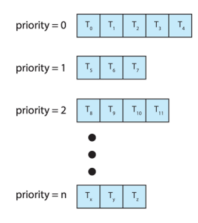

FCFS, SJF, Round Robin, Priority Scheduling, Multilevel Queue e il Completely Fair Scheduler di Linux. Come il SO decide chi usa la CPU e quando.
Lo scheduler della CPU è il componente del SO che decide quale processo (o thread) occupare la CPU nel prossimo time slot. Opera sulla ready queue: la coda dei processi pronti all'esecuzione. Lo scheduling può essere non preemptive (il processo tiene la CPU finché non la rilascia volontariamente) o preemptive (il SO può sottrarre la CPU al processo in esecuzione).
I criteri di valutazione sono: CPU utilization (massimizzare l'uso della CPU, idealmente 100%), Throughput (processi completati per unità di tempo), Turnaround time (tempo totale dalla sottomissione al completamento), Waiting time (tempo passato in ready queue), Response time (tempo dalla richiesta alla prima risposta, cruciale per sistemi interattivi).
Il più semplice degli algoritmi: i processi vengono eseguiti nell'ordine in cui arrivano nella ready queue, senza preemption. L'implementazione usa una coda FIFO.
Il problema principale è l'effetto convoy: se un processo lungo arriva prima di molti processi brevi, questi ultimi devono aspettare tutta la sua esecuzione. Con un processo da 10 secondi seguito da cento processi da 0.1 secondi, il waiting time medio si avvicina a 10 secondi. FCFS è inadatto per sistemi interattivi o time-sharing.
Esegue sempre il processo con il CPU burst più breve. Garantisce il waiting time medio minimo teorico tra tutti gli algoritmi non preemptive, ma ha un difetto fondamentale: il SO non conosce in anticipo la durata del prossimo CPU burst.
La soluzione è la previsione esponenziale:
\begin{equation} \qquad \mathbf{\tau(n+1)} = \alpha\tau(n) + (1-\alpha)\tau(n) \end{equation} dove $\tau(n)$ è la durata misurata del burst ${n}$ e $\alpha$ è un parametro(tipicamente 0.5) controlla il peso dei burst recenti vs storici.
La variante preemptive (SRTF — Shortest Remaining Time First) sospende il processo corrente se ne arriva uno con burst stimato minore.
Il rischio è la starvation dei processi lunghi: se continuano ad arrivare processi corti, i lunghi non vengono mai schedulati.
Ogni processo riceve un intervallo di tempo fisso chiamato time quantum (o time slice), tipicamente 10–100 ms. Alla scadenza del quantum, il processo viene preempted e messo in fondo alla ready queue. Se il processo completa prima del quantum, rilascia la CPU spontaneamente.
Il Round Robin è l'algoritmo ideale per i sistemi time-sharing perché garantisce equità (nessun processo aspetta più di (n-1)×quantum) e ottima risposta per processi interattivi. La scelta del quantum è cruciale: troppo piccolo → troppi context switch; troppo grande → degrada a FCFS.
Ogni processo ha un numero di priorità (convenzione: il numero più basso = priorità più alta). La CPU va sempre al processo a priorità più alta nella ready queue. La versione preemptive sospende il processo corrente se ne arriva uno a priorità più alta.
Il problema principale è la starvation: processi a bassa priorità potrebbero non ricevere mai la CPU se ci sono continuamente processi ad alta priorità. La soluzione è l'aging: la priorità di un processo aumenta proporzionalmente al tempo che trascorre in attesa, garantendo che prima o poi riceva la CPU.
La ready queue viene divisa in più code separate, ognuna per una categoria di processi (foreground interattivi, background batch, processi di sistema). Ogni coda ha il proprio algoritmo interno (Round Robin per il foreground, FCFS per il batch) e una propria priorità rispetto alle altre code.
I processi non si spostano tra code. Il principale svantaggio è la rigidità: un processo batch che diventa interattivo rimane comunque nella coda a bassa priorità.

Estende il Multilevel Queue con la possibilità per i processi di migrare tra code in base al loro comportamento. Un processo che usa molto la CPU scende di priorità (finisce nelle code inferiori con quantum più lungo). Un processo che si comporta come interattivo (usa poco CPU, fa molti I/O) sale di priorità.
È l'algoritmo più flessibile e generale. Parametri configurabili: numero di code, algoritmo per ogni coda, regole di promozione/declassamento, metodo di scelta quando un processo è in starvation. Unix/Linux originale usava una variante di questo schema.
Lo scheduler di Linux moderno, introdotto nel kernel 2.6.23. Il principio è semplice: ogni processo deve ricevere una quota equa del tempo CPU. CFS traccia per ogni processo il virtual runtime (vruntime): il tempo CPU consumato, pesato per la priorità (nice value).
I processi sono ordinati per vruntime in un albero rosso-nero (una BST bilanciata). Lo scheduler esegue sempre il processo con il vruntime più basso (il nodo più a sinistra dell'albero), garantendo equità. Non c'è un quantum fisso: il time slice è proporzionale alla priorità relativa dei processi in coda. CFS offre latenza eccellente per i processi interattivi e alto throughput per i batch.